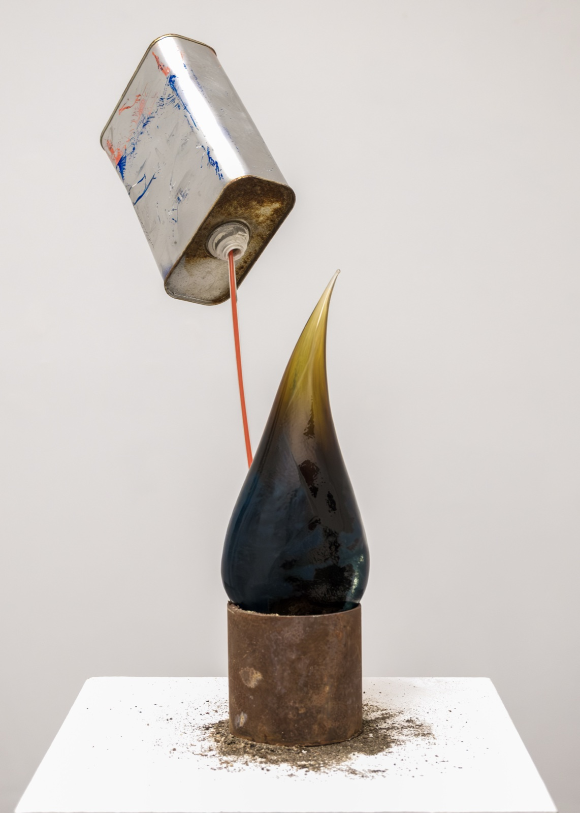

About
Artist Statement
I am a designer and artist working toward degrees in Design and Visual Art Studies. My work combines digital design with hands-on fabrication, exploring how ideas change when they move from a screen into a physical form. My process often begins with digital sketches or mockups before I experiment with physical materials. Through this process, I create objects that balance structure, function and expressive qualities. I am interested in work that exists between a designed object and a sculpture.
This work is part of a larger exploration of material experimentation and the connection between digital planning and physical making. Each piece connects through the process of developing an idea, testing it and changing it as I work. I imagine these pieces shown together in a gallery or studio setting where viewers can walk around them and see the time and labor involved in making them. My practice connects to both contemporary design and sculpture because it considers how objects can be functional, visually interesting and emotionally meaningful.
As I continue developing this work, I am thinking about how an object can hold emotion even when it is carefully planned and designed. I want viewers to notice the relationship between the structure of each piece and the process used to create it, and to slow down, look closely and consider how physical objects can communicate feelings that are difficult to explain with words.
Bio
Allison Correnti is a designer and artist from San Diego, California, completing a BFA in Design and a BA in Visual Art Studies at California State University, San Bernardino (expected 2027). She works as a Graphic Designer for Associated Students, Inc. at CSUSB, and has interned in print production at Unique Sign & Printing and in marketing at Radeus Labs, where she redesigned the Jei logo. Her glass work has been shown in juried exhibitions at the Robert & Frances Fullerton Museum of Art in 2025 and 2026, received the CSUSB Coldworking Award, and was published in GEEX Journal, Volume 2.